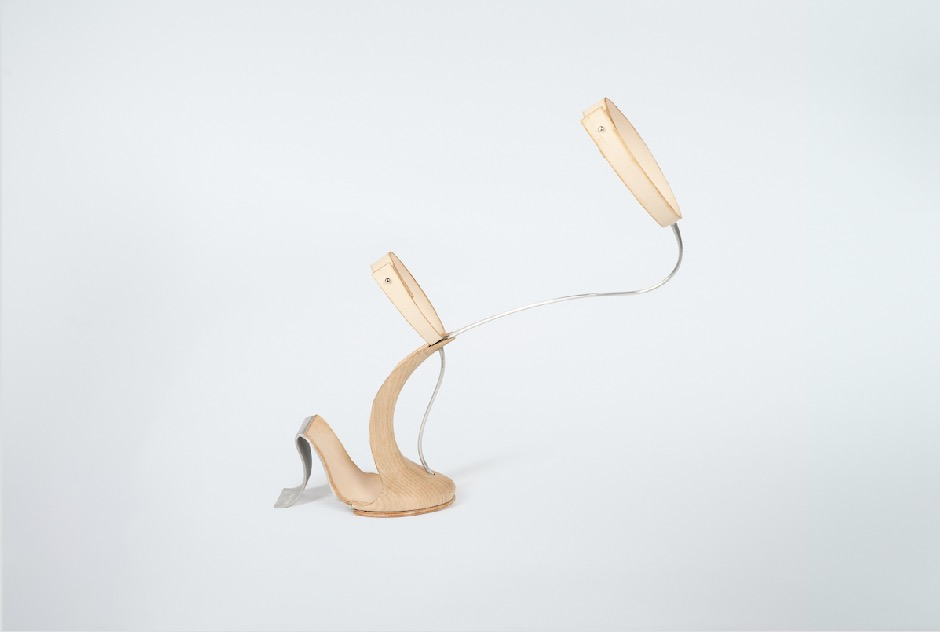

MAINTAIN BALANCE: People usually walk on some steep or small areas of
ground and maintain their balance with several assistive features. My shoes are designed
with an incline to simulate the crawling of a walking animal on all fours, creating a sense
of balance as if you were a tiger with its feet on the ground in the African savannah.
